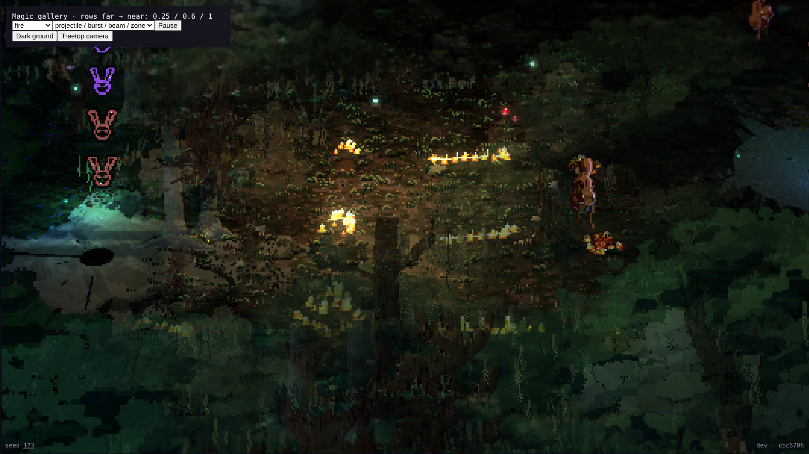

fire
369.167 ms difference of medians on ANGLE (Google, Vulkan 1.3.0 (SwiftShader Device (Subzero) (0x0000C0DE)), SwiftShader driver); not a laptop budget result.

Before: legacy projectile / burst / beam / zoneAfter: shared projectile / burst / beam / zoneBefore clipAfter clip
Other forms, dark ground and isometric check
frost
493.115 ms difference of medians on ANGLE (Google, Vulkan 1.3.0 (SwiftShader Device (Subzero) (0x0000C0DE)), SwiftShader driver); not a laptop budget result.
Before clipAfter clip
Other forms, dark ground and isometric check
venom
67.802 ms difference of medians on ANGLE (Google, Vulkan 1.3.0 (SwiftShader Device (Subzero) (0x0000C0DE)), SwiftShader driver); not a laptop budget result.
Before clipAfter clip
Other forms, dark ground and isometric check
moonlight
459.162 ms difference of medians on ANGLE (Google, Vulkan 1.3.0 (SwiftShader Device (Subzero) (0x0000C0DE)), SwiftShader driver); not a laptop budget result.
Before clipAfter clip
Other forms, dark ground and isometric check
storm
-117.351 ms difference of medians on ANGLE (Google, Vulkan 1.3.0 (SwiftShader Device (Subzero) (0x0000C0DE)), SwiftShader driver); not a laptop budget result.
Before clipAfter clip
Other forms, dark ground and isometric check
earth
-251.057 ms difference of medians on ANGLE (Google, Vulkan 1.3.0 (SwiftShader Device (Subzero) (0x0000C0DE)), SwiftShader driver); not a laptop budget result.
Before clipAfter clip
Other forms, dark ground and isometric check
shadow
143.607 ms difference of medians on ANGLE (Google, Vulkan 1.3.0 (SwiftShader Device (Subzero) (0x0000C0DE)), SwiftShader driver); not a laptop budget result.
Before clipAfter clip
Other forms, dark ground and isometric check
bloom
31.887 ms difference of medians on ANGLE (Google, Vulkan 1.3.0 (SwiftShader Device (Subzero) (0x0000C0DE)), SwiftShader driver); not a laptop budget result.
Before clipAfter clip
Other forms, dark ground and isometric check
water
46.230 ms difference of medians on ANGLE (Google, Vulkan 1.3.0 (SwiftShader Device (Subzero) (0x0000C0DE)), SwiftShader driver); not a laptop budget result.
Before: legacy projectile / burst / beam / zoneAfter: shared projectile / burst / beam / zone Before clipAfter clip
Other forms, dark ground and isometric check
forms-2forms-3darkisoiso-dark sand
47.204 ms difference of medians on ANGLE (Google, Vulkan 1.3.0 (SwiftShader Device (Subzero) (0x0000C0DE)), SwiftShader driver); not a laptop budget result.
Before: legacy projectile / burst / beam / zoneAfter: shared projectile / burst / beam / zone Before clipAfter clip
Other forms, dark ground and isometric check
forms-2forms-3darkisoiso-dark wood
-88.436 ms difference of medians on ANGLE (Google, Vulkan 1.3.0 (SwiftShader Device (Subzero) (0x0000C0DE)), SwiftShader driver); not a laptop budget result.
Before: legacy projectile / burst / beam / zoneAfter: shared projectile / burst / beam / zone Before clipAfter clip
Other forms, dark ground and isometric check
forms-2forms-3darkisoiso-dark wind
25.302 ms difference of medians on ANGLE (Google, Vulkan 1.3.0 (SwiftShader Device (Subzero) (0x0000C0DE)), SwiftShader driver); not a laptop budget result.
Before: legacy projectile / burst / beam / zoneAfter: shared projectile / burst / beam / zone Before clipAfter clip
Other forms, dark ground and isometric check
forms-2forms-3darkisoiso-dark party
125.870 ms difference of medians on ANGLE (Google, Vulkan 1.3.0 (SwiftShader Device (Subzero) (0x0000C0DE)), SwiftShader driver); not a laptop budget result.
Before: the real amber/rose cast motesAfter: shared projectile / burst / beam / zone Before clipAfter clip
Other forms, dark ground and isometric check
forms-2forms-3darkisoiso-dark Temporary frost
activethawclearFrost cycle